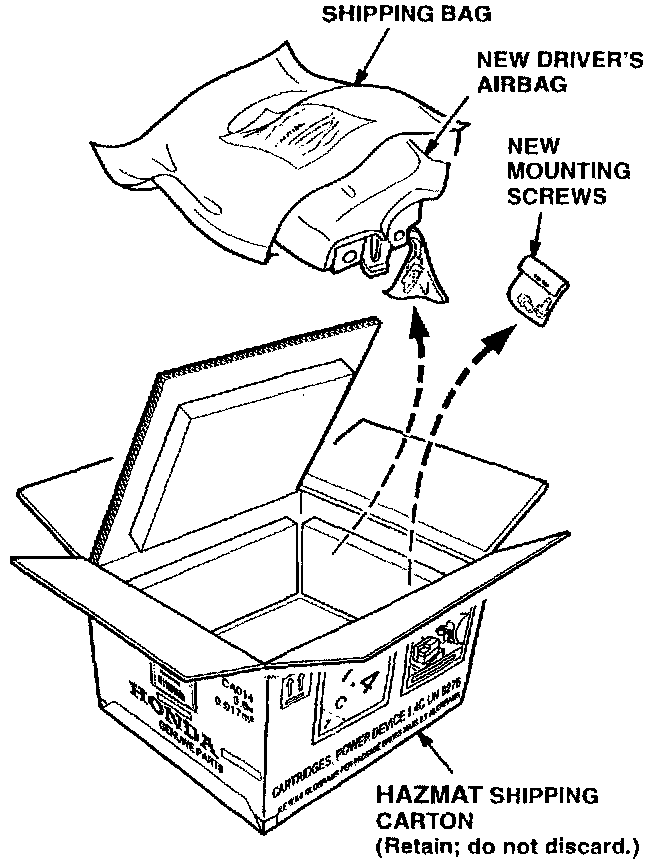
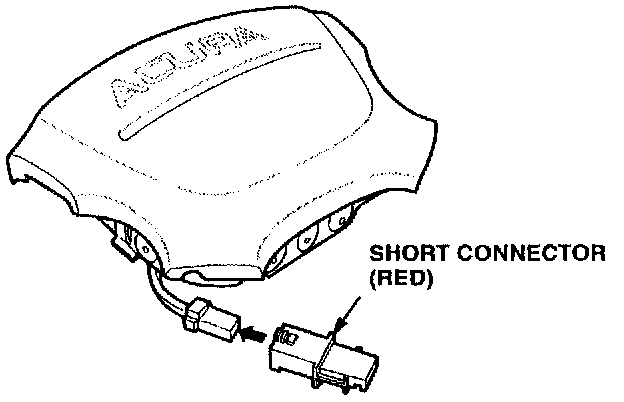
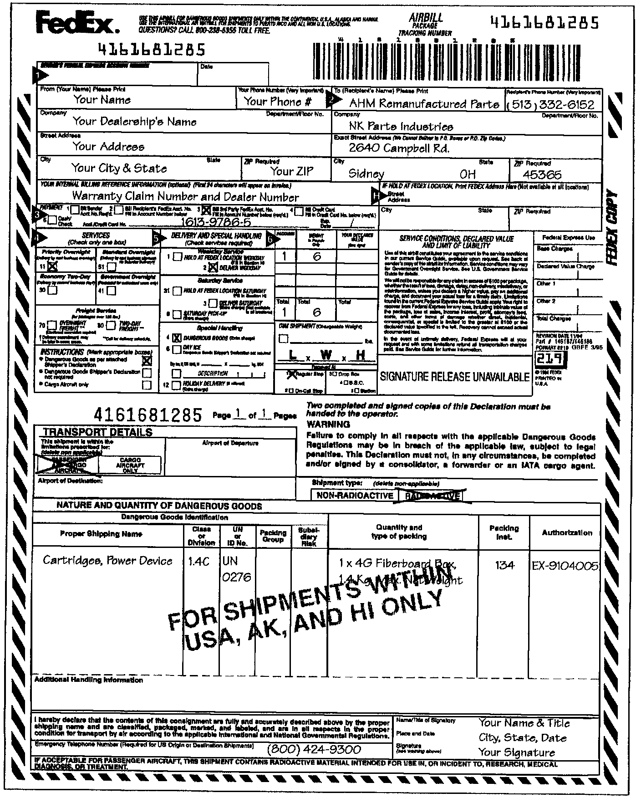
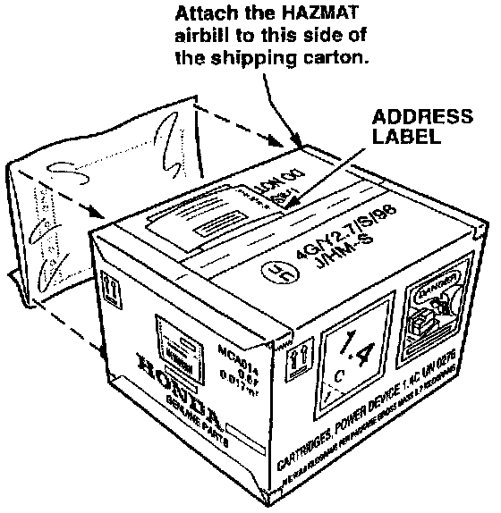

Driver's Airbag Cover Remanufacturing Program
October 1, 1996BULLETIN NO.
96-043
YEAR
1994 - 95
MODEL
INTEGRA
VIN APPLICATION
ALL
Driver's Airbag Cover Remanufacturing Program
BACKGROUND
Some driver's airbag covers may have cosmetic damage such as peeling paint or scratches. For driver's airbags covers with this type of damage, American Honda has developed a remanufacturing program.
This program is only for cosmetically damaged driver's airbags in good working order. Do not use this program to replace a deployed driver's airbag. Deployed airbags are not covered under warranty, and they must be replaced with new airbags. Do not deploy the driver's airbag before shipping it to the core collection center, or the warranty claim will be debited.
WARRANTY CLAIM INFORMATION
In warranty:
The normal warranty applies.
Out of warranty:
Any repair performed after warranty expiration may be eligible for goodwill consideration by the District Technical Manager or your Zone Office. You must request consideration, and get a decision, before starting work.
Operation number: 752101
Flat rate time: 0.2 hour
Failed P/N: Use the "RM" part number (from
the repair order) without the "RM"
Defect code: 019
Contention code: A01
PROCEDURE
Advisor:
When a customer calls or comes in with a cosmetically damaged driver's airbag cover, do this:
1. Note the interior color of the vehicle (taupe or black).
2. Schedule a date for installing the remanufactured airbag based on its estimated time of arrival.
Parts Manager:
3. Order the appropriate colored remanufactured airbag using the controlled parts ordering system on the Dealership Communication System (DCS).
The airbags can be ordered only through the controlled parts ordering system.
Driver's Airbag (Taupe): P/N 77800-ST7-405RM
Driver's Airbag (Black): P/N 77800-ST7-406RM
Technician:
4. When the customer returns for the appointment, have the appropriate colored remanufactured driver's airbag on hand.
5. Remove the cosmetically damaged driver's airbag. Refer to page 17-24 of the service manual.

6. Carefully open and remove the remanufactured driver's airbag and new mounting screws from the HAZMAT shipping carton. Retain this shipping carton for the core return airbag.
7. Install the remanufactured driver's airbag. Refer to page 17-26 of the service manual.
NOTE:
Be sure to leave the red short connector connected to the core return airbag. The remanufactured airbag comes with this connector.
8. Place the core return airbag in the HAZMAT shipping carton the remanufactured airbag came in, and return it to your Parts Manager.
Parts Manager:
When you receive a core return airbag, do this:
9. Make sure the core return airbag matches (part number and color) the remanufactured airbag shipping carton, or it will not be accepted for core credit.

10. To prevent accidental deployment, make sure the red short connector is connected to core return airbag.
11. Place a copy of the DCS warranty claim inside the shipping carton.
NOTE:
If a copy of the DCS warranty claim is not included with the core return airbag, your dealership may be billed a $50.00 service charge.
12. Seal the shipping carton with clear shipping tape.
NOTE:
Use care when sealing the HAZMAT shipping carton. The HAZMAT labeling must be clear and visible. The labels are important and are regulated by the Federal Government.

13. Fill out a Federal Express HAZMAT airbill. See example above.
^ Do not use an ordinary FEDEX airbill. Airbags are classified as hazardous material and must be shipped with a HAZMAT airbill.
^ Do not ship the core return airbag to Warranty Parts Inspection (WPI).
^ Ship the core return airbag to this address:
AHM Remanufactured Parts
c/o NK PARTS INDUSTRIES
2640 Campbell Rd.
Sidney, OH 45365

14. Attach the filled-out HAZMAT airbill to the side of the shipping carton only in the area shown.
NOTE:
Be sure the airbill is not covering any of the (HAZMAT) shipping carton labels.
15. Be sure your dealer's name and address and THE AHM Remanufactured Parts address are on a separate label on the top of the shipping carton.
EXAMPLE:
Your Dealer's Name
1234 North State St.
Anytown, USA 00000
TO: AHM Remanufactured Parts
c/o NK PARTS INDUSTRIES
2640 Campbell Rd.
Sidney, OH 45365
SHIPPING AND HANDLING PRECAUTIONS
^ Do not overpack the airbag (HAZMAT) shipping carton. In other words do not place an airbag (HAZMAT) shipping carton, or multiples of these cartons, in a another box and return it to the core collection center. The HAZMAT airbill is for one airbag unit in the original (HAZMAT) shipping carton.
^ The package must be properly identified, classified, packed, marked, labeled, and documented in accordance with the IATA Dangerous Goods Regulations.
EXAMPLE OF HAZMAT AIRBILL